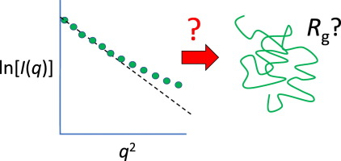

Home
Tutorial: Primary Data analysis
Tutorial contributors: Andreas Haahr Larsen, Martin Cramer Pedersen

Cover image adapted from Balu et al. 2016, J. Phys. Chem. B 120: 6490-6503 with permission.
Before you start
- No requirements, but for some of the tutorial parts you can opt for using:
(1) Python (including numpy, scipy and matplotlib) or similar for importing and plotting data (free and open source software, installation required), or
(2) ATSAS (free software for academic users, installation required).
Learning outcomes
Be able to retrieve structural information from a SAXS or SANS dataset by primary data analysis, scattering.g., before doing detailed modelling, e.g. with form factors. This includes:- Learn how to do a Guinier analysis and retrieve the radius of gyration.
- Use Kratky plot to assess the whether a particle is compact/well-folded or disordered/unfolded.
- Generate a $p(r)$ to retrieve structural parameters, $R_g$ and $d_\mathrm{max}$.
- Estimate particle shapes, such as spheres and cylinders from looking at the $p(r)$.
- Recognize the $p(r)$ from a sample of particles with positive and negative scattering internal contrasts.
Part I: Guinier plot and Guinier analysis for $R_g$ determination
The Guinier approximation is valid at low values of $q$:
$$I(q) \approx I(0)\exp(-q^2 R_g^2/3)$$
From a Guinier analysis you can derive the (contrast-weighted) radius of gyration, $R_g$ of the particles, i.e., a Guinier analysis gives provides the overall size of the measured particles. Extended particles have larger $R_g$ than compact particles (with the same volume), so $R_g$ also contains shape information.
The Guinier approximation can be expressed as a linear relation:
$$\ln(I) = \ln(I_0) - (R_g^2/3)q^2$$
Therefore, a plot of $\ln(I)$ vs $q^2$ (for small values of $q$) is denoted a Guinier plot, and $R_g$ may be determined from the slope of this plot. This relation is only true for small values of $q$, which is the denoted the Guinier region of data. As a rule of thumb, the Guinier approximation is valid up to $qR_g = 1.3$ for globular particles (i.e. sphere-like particles), and up to $qR_g = 1.0$ for elongated particles (e.g., cylinders).

Try determining the radius of gyration for the protein lysozyme from the small-angle scattering biological data bank (Download files > curve (dat)).
We here provide guides to do it (1) manually (python or similar required, good if you would like to train some data handling), (2) using BayesApp (no installation required, fast and easy), (3) using AutoRg (ATSAS software required, used a lot in the field of biological SAXS).
Your estimation of $R_g$ should be consistent with the reported value in the SASBDB entry (within +/- 1-2 Å). However, sometimes $R_g$ is larger than expected.
- Large $R_g$ values may be a sign of:
- Aggregation.
- Oligomerization.
- Change of shape (more elongated particles have larger $R_g$ than compact particles). Finally, interparticle interaction may leads to lower values of $R_g$.
Part II: Kratky plot
The Kratky plot ($q^2I$ vs $q$) carries information about the structural flexibility of a particle. This is, e.g., used for studies of the foldedness of proteins:

This interpretation assumes that the particle is homogeneous, meaning the scattering length density is approximately the same throughout the particle. Proteins is one example of an approximately homogeneous particle. Detergent micelles or block copolymer micelles are an examples of a particles that are not homogeneous.
Make a Kratky plot for the SAXS lysozyme data. You may use BayesApp (enable Kratky plot by clicking the box) or this python script. Either ways, you may need to adjust the background level. In BayesApp this is done by clicking Advanced options -> Subtract constant before...
Lysozyme measured under these conditions is (predominantly) folded - you can see that from the Kratky plot by comparing with the idealized Kratky plots.
Part III: Indirect Fourier Transformation
As the coherent scattering can be calculated by a Fourier transformation of the particle, then an inverse Fourier transformation of the data should give back the structure. Unfortunately this is not the case for small-angle scattering as structural information is lost.
- There is loss of structural information in small-angle scattering due to:
- Random orientation of the sample (as opposed to aligned particles).
- The phase problem. The wave amplitude is measured by the detector, but the phase is not.
- Noise in data.
- The data is measured in a finite range (between $q_\mathrm{min}$ and $q_\mathrm{max}$).
- Smearing effects, from instrumental smearing or polydispersity.

Thus, without any modelling, you may can get an idea of the structure of your particle of interest.
To see an example of this, go to Shape2SAS and press the green "Submit" button with the default values. Then you will see the $p(r)$ for a 50 Å sphere, along with the scattering calculated. A couple of observations
- The pair distance distribution is symmetric, as a sphere is symmetric in all directions.
- $p(r)$ starts in zero and goes to zero at some value of $r$. The latter is the maximum distance between any pair in the particle and is denoted $d_\mathrm{max}$. For a sphere, $d_\mathrm{max}$ equals the diameter.
- The most common distance between pairs of scatterers in a sphere is equal to its radius.
To see and compare the $p(r)$ from various particles, go back to Shape2SAS and click the box "Calculate scattering for Model 2" to choose another shape (e.g. a cylinder) or a larger/smaller sphere as Model 2. Press "Submit"
$p(r)$ for non-homogeneous particles.
If the particle is not homogeneous (the contrast is not approximately the same in the whole particle), then the $p(r)$ is harder to interpret.
This is because $p(r)$ is a distance distribution weighted with the product of the excess scattering length (or contrast or $\Delta\mathrm{SL}$), i.e. the difference between the scattering lenght of a given scatterer and the scattering lenght of the solvent. This product is negative if one has negative and one has positive contrast.
This often leads to bumps or oscillations in the $p(r)$. In Shape2SAS, simulate a spherical core-shell particle with negative core contrast ($\Delta\mathrm{SLD}=-1$) and and positive shell contrast ($\Delta\mathrm{SLD}=1$)

In this case, you will get oscillations, and you may even get negative parts in the $p(r)$. The negative parts come if, at a given distance, there are most pairs having contrasts with opposing signs (i.e. one has positive and one has negative contrast.)
Generate a $p(r)$
Try to do an indirect Fourier transformation of the lysozome data. This can be done in BayesApp (no installation required) or in many software packages, including ATSAS (guide for generating $p(r)$ in ATSAS).
You may give an estimate of the $d_\mathrm{max}$ (ca 50 Å, note that $d_\mathrm{max}$ is called "Rmax" in ATSAS). This may help the algorithms find a better solution faster.
By comparing with the $p(r)$ from a sphere, you can see that lysozyme is globuler (i.e., roughly spherical), but not fully symmetric. More like an almost-spherical ellipsoid.
$$R_g^2 = \frac{1}{2}\frac{\int_0^{dmax} r^2 p(r)}{\int_0^{dmax} p(r)}$$ A good quality check of data is to compare the $R_g$ obtained from $p(r)$ with that obtainedb by Guinier analysis.
For non-homogeneous particles, you may get negative contributions to $p(r)$. In that case, it is necessary to allow negative values in $p(r)$:
- To see the effect of NOT doing this, try to run BayesApp on the simulated micelle data from Shape2SAS, which had negative contrast in the core (Shape2SAS>or download this simulated dataset). You may help the algorithm by providing an approximative value for the maximum distance, $d_\mathrm{max}$.
- You will notice that the $p(r)$ does not resemble the one you generated in Shape2SAS.
- Now, allow BayesApp to use negative values in $p(r)$ by setting Transformation/Regularization to "Negative", and rerun.
Challenges
- Challenge 1: You have measured a sample of RNase A in D2O with SANS (download SANS data). What is the overall radius of gyration of this protein?
- Challenge 2: You have measured the microtubule-associated protein 2 (MAP2) in SAXS (download SAXS data). Is it folded or unfolded?
- Challenge 3: A sample of discoidal particles (i.e. shaped like discs/short cylinders) was measured in SAXS at neutral pH (download neutral pH SAXS data) and pH 5.0 (download low pH SAXS data). What effect does the pH change have on the particles and their interaction?
Feedback
Help us improve the tutorials by- Reporting issues and bugs via our GitHub page. This could be typos, dead links etc., but also insufficient information or unclear instructions.
- Suggesting new tutorials/additions/improvements in the SAStutorials forum.
- Posting or answering questions in the SAStutorials forum.